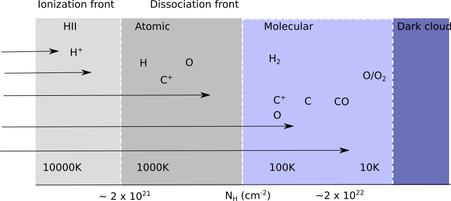

Testing of Time-dependent PDR model using KOSMA-Tau PDR model

- Testing various time-dependent models implemented in the KOSMA-Tau PDR model
- Created a system to write/read results into/from hdf5 files
- Analyze the results from the models to understand the chemistry and physics of the molecular clouds
- Guide : PD. Dr. Volker Ossenkopf-okada, University of Cologne, Germany
Diffusion- advection effects in Photo-dissociated regions using KOSMA-Tau PDR model
- Molecular clouds are the birth place of stars in the Galaxy.
When a star forms it will irradiate the clouds nearby.
Physics and chemistry of this regions will be influenced by the radiation from the star.
I am studying how the transport of molecules influence the chemistry and physics of the medium.
I am working in the group of Prof. Jürgen Stutzki
with PD. Dr. Volker Ossenkopf-okada, University of Cologne, Germany
Distribution of Pulsars in the Galaxy
- Created a model to explain the distribution of Pulsars in the Galaxy using object-oriented Python
- Guide: Dr. Avinash Deshpande, Professor, Astronomy and Astrophysics Division, Raman Research Institute, India
Imaging of three 3C sources (Master’s Thesis)
- This project was dealing specifically with three active radio galaxy centers 3C219, 3C403, and 3C433, which were imaged using AIPS programming Language from the VLA data.
- Guide : Dr. Sivaraman,Gandhigram Rural Institute- Deemed University, Tamil Nadu, Kerala
Active Galactic Nuclei: the central Engine
- A theoretical model of AGN is created with a central core (a supermassive black hole), accretion disc and the jets emitted.
- An orientation based unification scheme created.
- Further to understand the impact of the intergalactic medium on the emitted jets some AGN are imaged using AIPS.
- Guide : Dr. Dharam Vir Lal, Associate Professor, National Centre for Radio Astronomy-TIFR, India